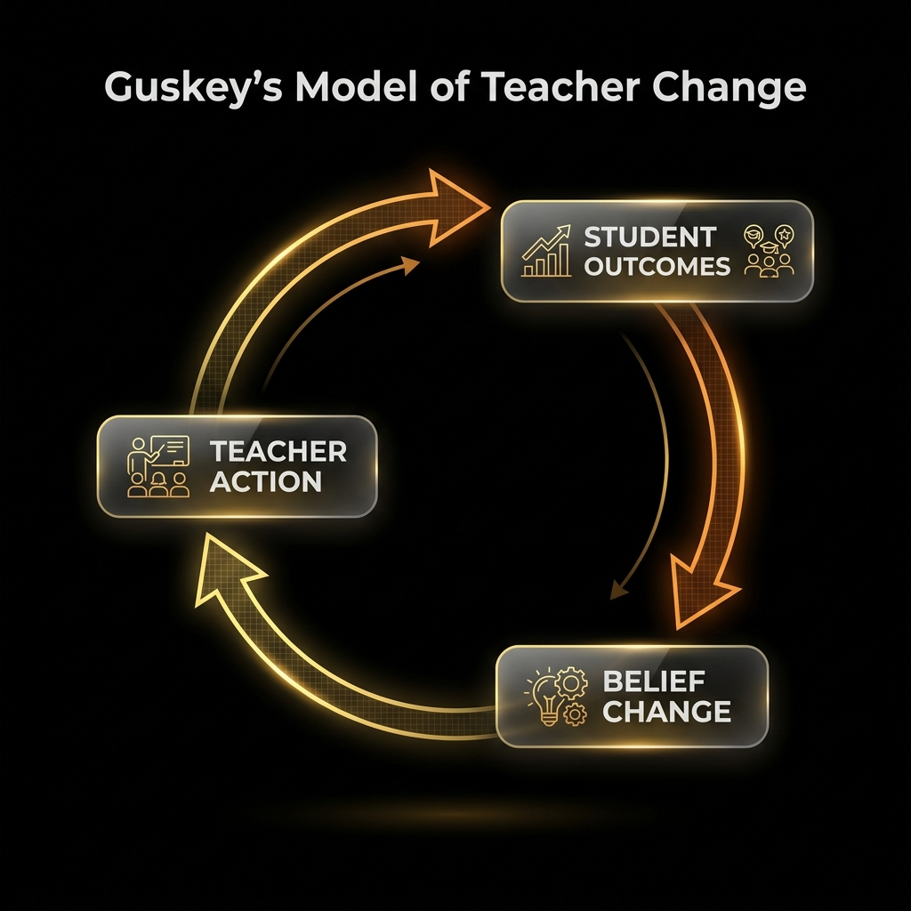
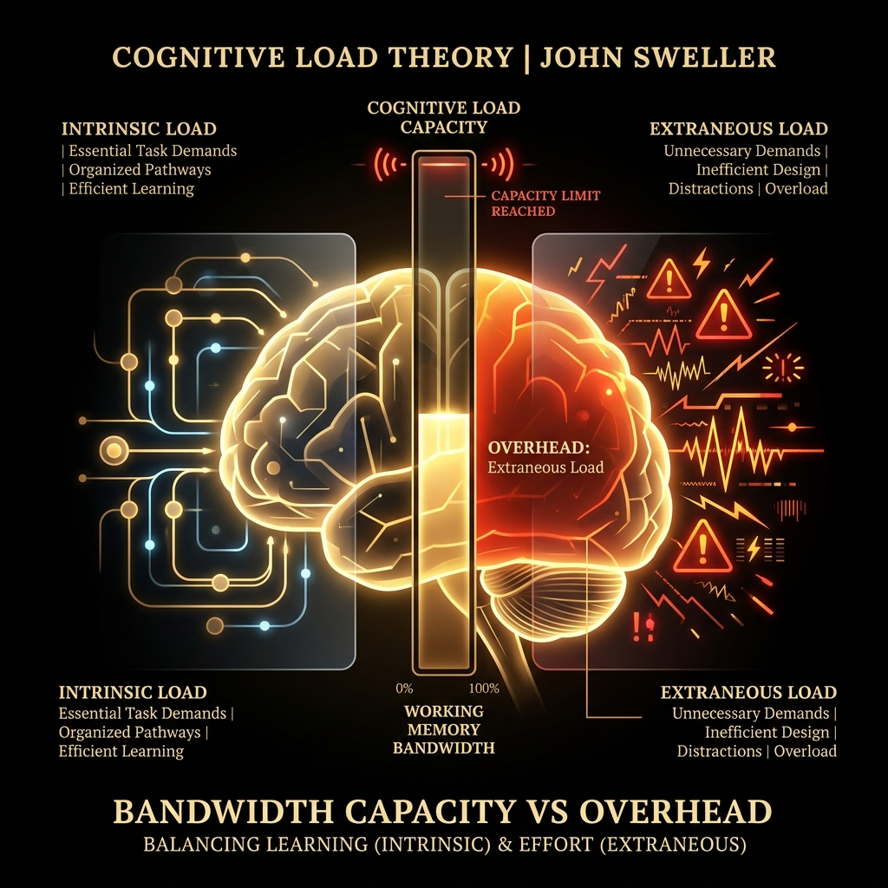
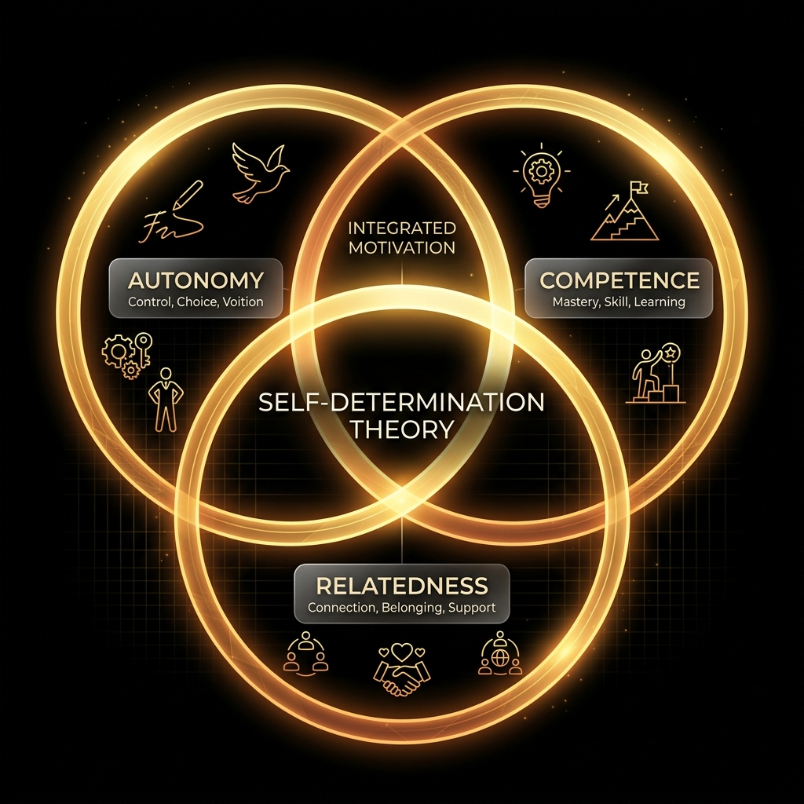
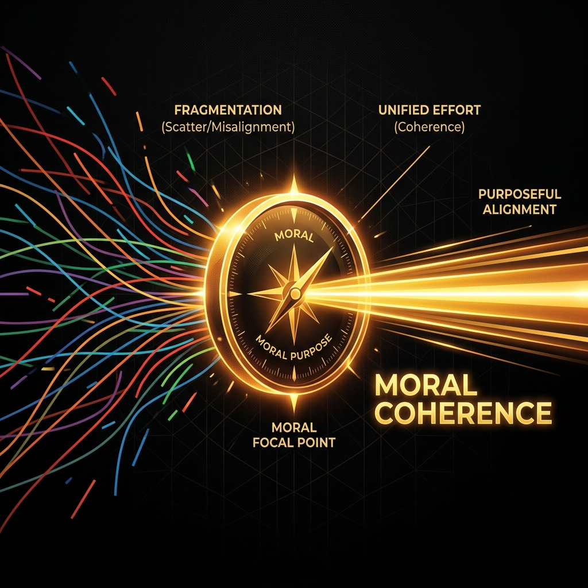

When a school initiative stalls, we rush to blame "teacher resistance" or "lack of buy-in." In reality, most failures are structural. If teachers don't have time, don't see the point, or don't feel a real obligation, no amount of motivational speeches or compliance tracking will make the work stick.
↳ The Institutional Readiness Framework helps leaders diagnose Ability, Desire, and Obligation.
Staff nod along in meetings, but nothing changes in classrooms. The cause is not cynicism; it's that the timetable and admin demands leave no protected time to plan or practice the new work.
A department agrees with the principle of a new strategy but quietly keeps doing what it has always done. The belief that the practice "works" is present, but it doesn't feel like who they are as professionals.
A handful of teachers use a new tool brilliantly, while others ignore it. Skill and desire exist, but there is no clear, shared standard that says, "Every student in this school is entitled to this."
Select a scenario to load its scores, see the matrix configuration, and explore tailored interventions.
None of the forces are strong enough to move the initiative. The culture defaults to maintenance and drift. New ideas remain talk, not practice.
Organic, sustainable, high-equity institutional practice. The initiative is woven into everyday teaching.
Teachers comply under surveillance, but the practice disappears when monitoring fades.
Staff care and feel obligated, but lack time or skill. High-effort, chaotic, and stressful.
Good practice exists in pockets, creating an equity lottery for students.
Tools or structures sit idle. Capacity exists, but no desire or obligation.
Teachers want to move, but structures and expectations are too rigid.
Mandates without ability or desire. Low quality, high anxiety.
None of the forces are strong enough. Culture defaults to maintenance and drift.
From inertia to peak agency: a four-step rollout.
Before announcing major change, quietly adjust structures. Re-engineer timetables, meeting agendas, and admin workflows to create protected time for planning and rehearsal. Apply a "one-in, one-out" rule for new requirements so staff regain real capacity.
John Sweller's Cognitive Load Theory shows that learning and enacting a new practice places heavy cognitive load on teachers. If their workday is saturated with administrative tasks, they suffer from cognitive overload. Leaders must remove administrative noise to free up mental working memory for instructional change.
With bandwidth secured, narrate a clear, evidence-based "why." Use local student data and classroom examples to show impact. Distinguish epistemic belief ("Does this work?") from identity alignment ("Is this who we are?"), and give departments autonomy to adapt the method while protecting student outcomes.
Thomas Guskey's Model of Teacher Change shows that buy-in is a trailing indicator. Belief follows the observation of positive student outcomes. In tandem, Deci & Ryan's Self-Determination Theory suggests that leaders must protect autonomy to build intrinsic desire rather than forcing compliance.
Once teachers have space and motivation, invest in practical coaching. Replace generic, all-staff sessions with subject-specific modelling, co-planning, and peer observation. Focus on one or two concrete routines at a time and give teachers a low-stakes experimentation window.
Richard Elmore's Instructional Core posits that schools cannot improve practice beyond the skill level of the staff doing the work. Simply declaring a standard without structured coaching and deliberate rehearsal yields no change in the actual classroom relationship.
When the practice is functional, fluent, and backed by evidence, formalize it as a baseline. Integrate the standard into department agendas, resource allocations, and review processes. Frame it as a promise to students and families: "Every child here should experience this level of teaching."
Richard DuFour highlights that true accountability is collective, built on peer promises. Viviane Robinson argues that effective leadership anchors expectations in student entitlements, shifting obligation from a top-down mandate to a professional responsibility.
The framework doesn't rely on advice or opinion. It integrates six foundational bodies of educational and psychological science.
"Belief in an initiative's value is a trailing indicator of student success."
Guskey's research shows that professional attitudes and beliefs change only after leaders support teachers to implement a practice and they witness improvements in student outcomes. Focus on early, low-stakes wins to build authentic desire.

"System coherence requires building capacity."
Elmore proved that policy modifications are irrelevant unless they directly alter the relationship of the teacher and the student in the presence of content, backed by collective competence.

"Teacher exhaustion is cognitive overload."
Applying Sweller's cognitive load model to organizations shows that leaders must clear administrative load to create working memory capacity for teachers to learn new methods.

"Sustainable drive is intrinsic."
Self-Determination Theory anchors the "Desire" force. Top-down mandates threaten autonomy, triggering identity friction. Sustainable drive is intrinsic, built on professional ownership.
"Transform top-down compliance into collective professional agreements."
Combining Richard DuFour's Professional Learning Communities (PLCs) with Viviane Robinson's Student-Centered Leadership, we anchor "Obligation" in student entitlements. Real accountability is built on peer-to-peer promises to students, not administrative threat.

"Coherence is a shared depth of understanding."
Fullan's change leadership proves that moral imperative must be translated into shared, reviewable standards embedded in the institutional design to prevent system drift.
This is a living model. If you have critiques, questions, or examples of how these forces play out in your district, we want to hear from you.